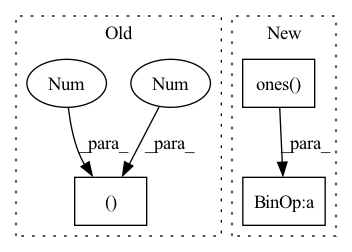

Pattern ID :1447

Before Change
SqueezeExcitation(embed_dim, embed_dim // 4),
nn.Conv2d(embed_dim, embed_dim, 1)
)
self.layer_scale = nn.Parameter(torch.ones((embed_dim,1,1)) * layer_scale_init)
self.drop_path = StochasticDepth(drop_path, "row") if drop_path > 0 else nn.Identity()
def forward(self, x: torch.Tensor):
After Change
SqueezeExcitation(embed_dim, embed_dim // 4),
nn.Conv2d(embed_dim, embed_dim, 1)
)
self.layer_scale = nn.Parameter(torch.ones(embed_dim, 1, 1) * layer_scale_init)
self.drop_path = StochasticDepth(drop_path, "row") if drop_path > 0 else nn.Identity()
In pattern: SUPERPATTERN
Frequency: 3
Non-data size: 3
Instances
Fragment ID: 3869855
Project Name: gau-nernst/vision-toolbox
Commit Name: 9c33936b15da329b7d51d981196aca20d5e00077
Time: 2022-03-04
Author: gau.nernst@yahoo.com.sg
File Name: vision_toolbox/backbones/patchconvnet.py
M Class Name: PatchConvBlock
N Class Name: PatchConvBlock
M Method Name: __init__(5)
N Method Name: __init__(4)
M Parent Class: nn.Module
N Parent Class: nn.Module
M File Name: vision_toolbox/backbones/patchconvnet.py
N File Name: vision_toolbox/backbones/patchconvnet.py
M Start Line: 77
M End Line: 89
N Start Line: 77
N End Line: 109
'>
Before Change
nn.GELU(),
nn.Linear(mlp_dim, embed_dim),
)
self.layer_scale_2 = nn.Parameter(torch.full((1,1,embed_dim), layer_scale_init))
self.norm_2 = nn.LayerNorm(embed_dim)
def forward(self, x: torch.Tensor):
After Change
self.norm_1 = nn.LayerNorm(embed_dim)
self.attn = nn.MultiheadAttention(embed_dim, 1, batch_first=True)
self.layer_scale_1 = nn.Parameter(torch.ones(embed_dim) * layer_scale_init)
self.norm_2 = nn.LayerNorm(embed_dim)
mlp_dim = int(embed_dim * mlp_ratio)
'>
Fragment ID: 3869867
Project Name: gau-nernst/vision-toolbox
Commit Name: 67e7e48c91632649ba08fc5848425c45fcbb8649
Time: 2022-02-20
Author: gau.nernst@yahoo.com.sg
File Name: vision_toolbox/backbones/patchconvnet.py
M Class Name: AttentionPooling
N Class Name: AttentionPooling
M Method Name: __init__(4)
N Method Name: __init__(4)
M Parent Class: nn.Module
N Parent Class: nn.Module
M File Name: vision_toolbox/backbones/patchconvnet.py
N File Name: vision_toolbox/backbones/patchconvnet.py
M Start Line: 57
M End Line: 66
N Start Line: 80
N End Line: 90
'>
Before Change
SqueezeExcitation(width, width // 4),
nn.Conv2d(width, width, 1)
)
self.layer_scale = nn.Parameter(torch.full((1,width,1,1), layer_scale_init))
def forward(self, x: torch.Tensor):
// (N, C, H, W)
After Change
SqueezeExcitation(embed_dim, embed_dim // 4),
nn.Conv2d(embed_dim, embed_dim, 1)
)
self.layer_scale = nn.Parameter(torch.ones((1,embed_dim,1,1)) * layer_scale_init)
def forward(self, x: torch.Tensor):
// (N, C, H, W)
'>
Fragment ID: 3869854
Project Name: gau-nernst/vision-toolbox
Commit Name: 67e7e48c91632649ba08fc5848425c45fcbb8649
Time: 2022-02-20
Author: gau.nernst@yahoo.com.sg
File Name: vision_toolbox/backbones/patchconvnet.py
M Class Name: PatchConvBlock
N Class Name: PatchConvBlock
M Method Name: __init__(3)
N Method Name: __init__(3)
M Parent Class: nn.Module
N Parent Class: nn.Module
M File Name: vision_toolbox/backbones/patchconvnet.py
N File Name: vision_toolbox/backbones/patchconvnet.py
M Start Line: 44
M End Line: 44
N Start Line: 66
N End Line: 66